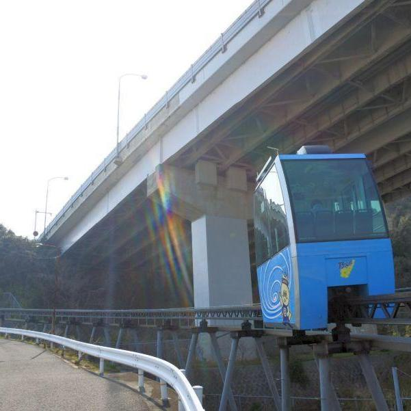
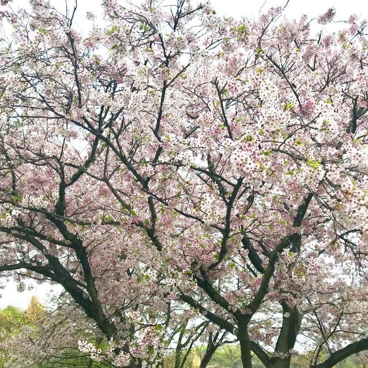
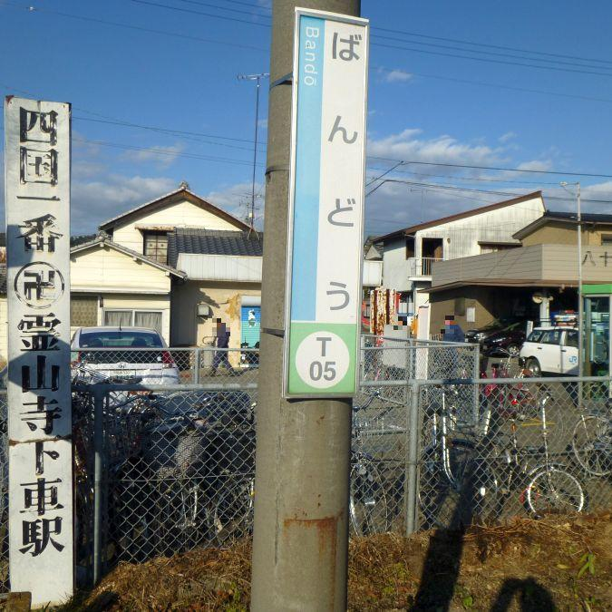
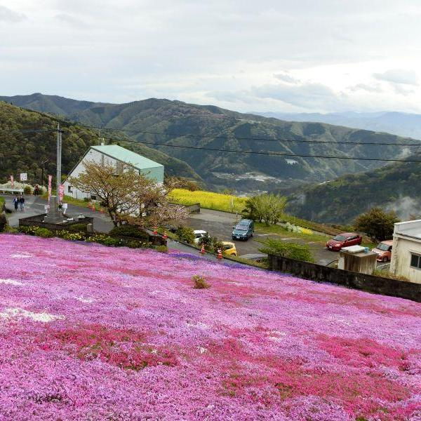
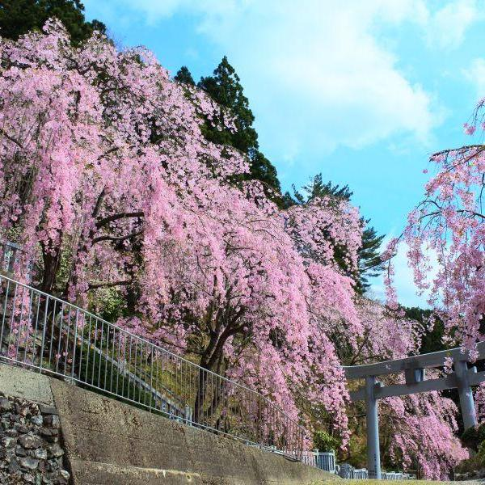
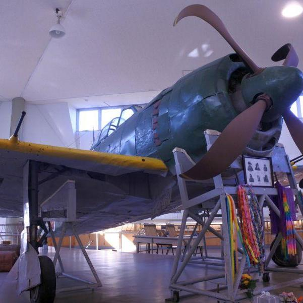

四国のおすすめ観光スポットをご紹介
2018年4月アーカイブ
-
 交通機関
レール上を走るゴンドラ。これは電車になるのか < すろっぴー / 徳島県鳴門市 >
-
 ARTSETOUCHI
女木島さくらまつり <香川県・女木島>
-
 寺社
四国八十八ヶ所の第一歩となるローカル駅 < 板東駅 / 徳島県鳴門市 >
-
 季節の花
斜面に広がるピンクのじゅうたんが見頃 < 広棚花の里 / 徳島県美馬市脇町 >
-
 季節の花
絶景しだれ桜と、山中に秘められた歴史ロマン < 川井峠 / 徳島県美馬市木屋平 >
-
ARTSETOUCHI
瀬戸内国際芸術祭ボランティアサポーターこえび隊 <香川県・岡山県>
-
 戦争遺跡
日本で唯一現存する紫電改。平和へのメッセージ < 紫電改 / 愛媛県愛南町>